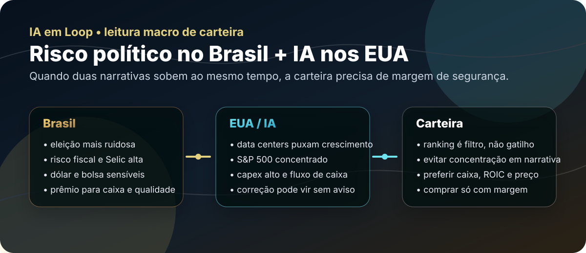

17/05: risco político, IA nos EUA e carteira sem heroísmo
A segunda leitura deste domingo sai do ticker individual e olha para o tabuleiro: no Brasil, eleição, fiscal, dólar e juros voltam a conversar com bolsa; nos Estados Unidos, a narrativa de IA sustenta índices em máximas, mas concentra expectativa demais em poucas empresas. Para a carteira, o recado é simples: ranking ajuda, mas margem de segurança manda.

Leitura visual: quando risco político brasileiro e euforia global com IA aparecem juntos, a resposta não é adivinhar manchete; é controlar concentração, preço e qualidade dos ativos.
O sinal do dia
O primeiro sinal conversa diretamente com mercado: a eleição de 2026 tende a ficar mais ruidosa, e episódios envolvendo Brasília, sistema financeiro, dólar e juros podem alterar a percepção de risco antes mesmo de mudarem os fundamentos das empresas. A leitura central não é partidária; é de preço de risco. Se o investidor passa a enxergar mais chance de continuidade fiscal expansionista, o dólar pode ficar mais sensível, a curva de juros pode exigir prêmio maior e a bolsa tende a separar melhor empresas frágeis de empresas com caixa.
O segundo sinal está nos Estados Unidos: a dependência crescente do mercado americano de investimento em infraestrutura de IA e data centers. Parcela relevante do crescimento recente passou a depender desse bloco, enquanto poucas gigantes carregam parte grande das expectativas de lucro do S&P 500. Isso não mata a tese de IA; apenas muda a pergunta: quanto desse crescimento já está no preço?
Leitura IA em Loop: Brasil e EUA estão dando sinais diferentes, mas a conclusão de carteira é parecida: não comprar narrativa sem margem. No Brasil, o risco é pagar caro por empresas dependentes de juros baixos que talvez demorem. Nos EUA, o risco é pagar múltiplo de perfeição por uma tese de IA que pode continuar certa, mas ficar cara demais no caminho.
Brasil: política vira juros antes de virar lucro
Quando uma disputa eleitoral ganha ruído, o primeiro impacto raramente aparece no balanço das empresas. Ele aparece antes em dólar, juros futuros, prêmio de risco e apetite por bolsa. Por isso, o investidor não precisa prever quem vence a eleição para ajustar a régua: basta reconhecer que mais incerteza exige mais desconto.
A leitura política conecta popularidade do governo, estímulos econômicos, dívida pública e a possibilidade de juros altos por mais tempo. Essa ponte é importante para o IA em Loop porque explica por que filtros quantitativos não podem ser lidos no vácuo: uma ação barata pode estar barata porque o ciclo de juros está contra ela.
| Sinal | Canal de transmissão | Implicação para carteira |
|---|---|---|
| Eleição mais ruidosa | Dólar, juros e prêmio de risco | Exigir desconto maior antes de aumentar Brasil |
| Fiscal sob pressão | Selic alta por mais tempo | Evitar empresas que dependem só de crédito barato |
| Dólar sensível | Custos, importados e commodities | Preferir empresas que repassam preço ou têm hedge natural |
| Bolsa seletiva | Fluxo migra para qualidade | ROIC, caixa e governança pesam mais que manchete |
EUA: a tese de IA é real, mas concentração cobra preço
A leitura dos EUA não trata IA como modinha. Pelo contrário: data centers, hyperscalers e infraestrutura digital estão puxando uma parte relevante da economia americana. O problema não é a tese existir; é a tese estar concentrada demais em poucas empresas e depender de capex enorme, fluxo de caixa robusto e expectativa de lucro crescente.
Em linguagem simples: capex é investimento pesado em infraestrutura, máquinas, data centers e capacidade produtiva. Quando esse gasto cresce, ele pode abrir uma avenida de lucro futuro; mas também consome caixa hoje. Se o mercado precifica crescimento perfeito e qualquer peça falha — juros de 10 anos altos, petróleo pressionando inflação, consumidor mais fraco ou lucro abaixo do esperado — a correção pode ser forte.
O que isso muda nos rankings
Para os rankings do IA em Loop, a leitura de hoje reforça três filtros qualitativos sobre os números. Primeiro: empresas bem ranqueadas por ROIC e earnings yield precisam ser testadas contra o ambiente de juros. Segundo: dividend yield alto não compensa risco de queda estrutural de lucro. Terceiro: nomes de IA ou tecnologia não devem ganhar passe livre só porque a narrativa é grande.
Mais interessantes
Empresas com caixa, retorno alto sobre capital, dívida controlada, poder de preço e receita menos dependente de euforia. Seguros, bancos fortes, infraestrutura, energia, serviços essenciais e indústria eficiente podem merecer radar, desde que o preço ajude.
Mais perigosas
Companhias alavancadas, varejo dependente de crédito barato, tese de crescimento sem lucro, ação que sobe só por “história de IA” e negócio que precisa de juros baixos para a conta fechar.
Brasil
A pergunta é: o lucro sobrevive se Selic e dólar ficarem mais altos por mais tempo? Se não sobreviver, o ranking quantitativo precisa de desconto extra.
EUA
A pergunta é: a empresa captura a infraestrutura de IA com caixa real ou só pega carona no múltiplo do setor? Se for só múltiplo, o risco de decepção aumenta.
Compra, venda ou espera?
Como leitura macro, a classificação de hoje é espera seletiva com caixa preparado. Não é sinal para desmontar carteira nem para correr atrás de qualquer ativo que tenha IA, dólar ou política no título. É sinal para aceitar que o preço de entrada ficou mais importante. O Professor reforça essa disciplina: mercado bom não dispensa margem de segurança, e juro menor só ajuda de verdade quando o preço pago ainda faz sentido.
- Compra: faz sentido em ativos de qualidade que já estejam com desconto suficiente para compensar juros altos, ruído político e volatilidade externa.
- Espera: é a postura correta quando a tese é boa, mas o preço já embute cenário perfeito — especialmente em ações ligadas à euforia de IA.
- Venda/redução: entra no radar quando a carteira está concentrada em empresas sem caixa, alavancadas ou dependentes de queda rápida da Selic.
Checklist prático para a carteira
- Revisar quais posições dependem diretamente de queda de juros no Brasil.
- Separar empresas que geram caixa agora de empresas que prometem caixa no futuro.
- Evitar concentração em uma única narrativa: eleição, petróleo, dólar, IA ou dividendos.
- Comparar cada compra com CDI e Tesouro: se o risco é maior, o retorno esperado precisa ser maior também.
- Nos EUA, tratar IA como tendência real, mas exigir valuation e fluxo de caixa — não apenas crescimento de capex.